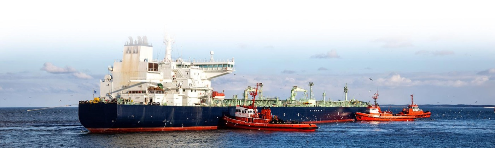
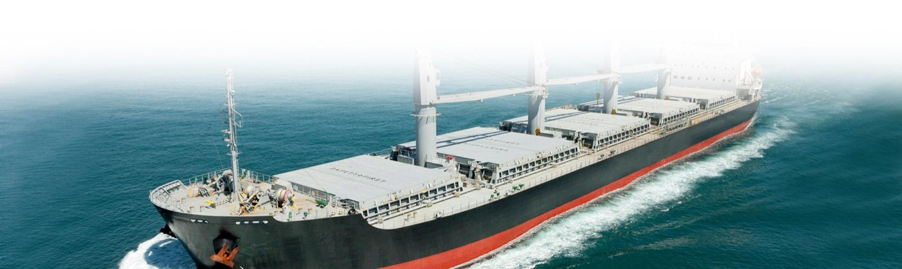
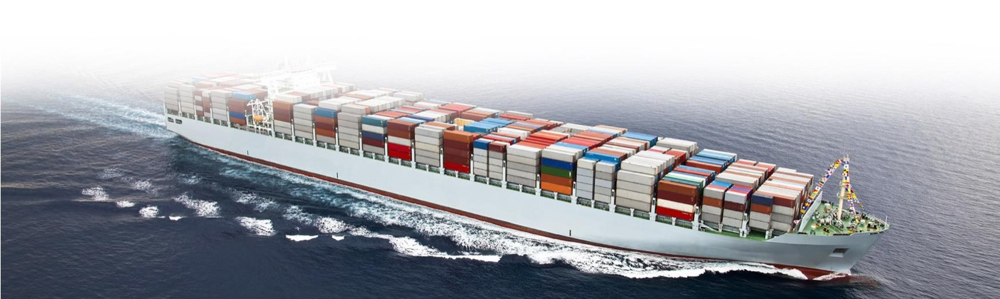
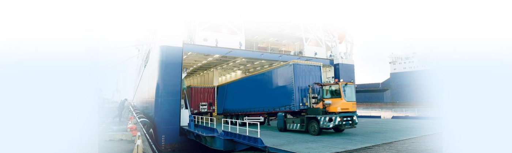
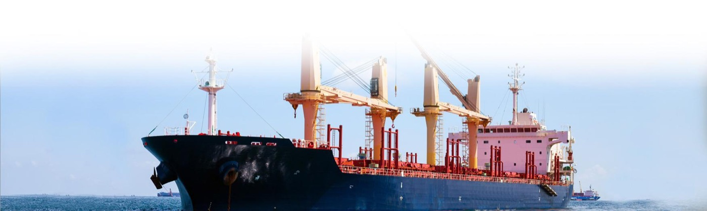
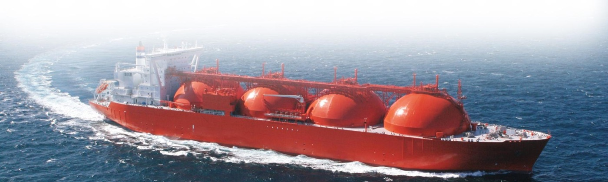

الرؤية
التزاماً بعلاقات عمل طويلة الأمد، رؤيتنا أن نكون رائداً إقليمياً في السوق من خلال الوفاء بوعدنا وتجاوزه، وتخطّي توقعات عملائنا وشركائنا.
نلتزم في شرف للملاحة بضمان فهم احتياجات عملائنا من خدمات الملاحة والخدمات اللوجستية والبحرية عالية الجودة وإدارتها على النحو الأمثل — بشبكة من تسعة مكاتب تغطي موانئ المنطقتين الشرقية والغربية.
الأرصفة، الغاطس، الرافعات، ورديات العتالة، والملاحة الليلية.
بيانات تشغيلية لأحد عشر ميناءً نخدم فيها موكّلينا: عدد الأرصفة وأنواعها، الغاطس، الرافعات، المسافة من محطة الإرشاد، كثافة المياه، وورديات العتالة.
من الوكالة الملاحية لناقلات النفط والغاز وسفن البضائع السائبة والخطوط المنتظمة وسفن الدحرجة، إلى الشحن والتخليص والتخزين والخدمات اللوجستية وبضائع المشاريع.

01 / 10خبرة واسعة في مناولة ناقلات النفط والغاز، من الخام والمنتجات إلى الأفراماكس وناقلات النفط العملاقة.
تفاصيل الخدمة ←
02 / 10مناولة كاملة لسفن البضائع السائبة من فئة هاندي إلى بنمَاكس وكيب، مع إشراف دقيق على المستندات.
تفاصيل الخدمة ←
03 / 10وكالة لخطوط الحاويات العالمية والإقليمية، من الحاويات القياسية إلى المبرّدة والمسطّحة.
تفاصيل الخدمة ←
04 / 10نشاط متخصص يتطلب تخطيطاً مسبقاً وتواصلاً عالي الكفاءة بين جميع الأطراف.
تفاصيل الخدمة ←
05 / 10أقدم أشكال التجارة وأكثرها تعقيداً تشغيلياً، بسجل مثبت في مناولة تشكيلة واسعة من البضائع.
تفاصيل الخدمة ← 06 / 10مناولة المعدات الثقيلة والبضائع الخارجة عن الأبعاد بتخطيط تفصيلي واختيار للمسارات.
تفاصيل الخدمة ←
07 / 10خدمات إمداد على مدار الساعة بمعايير السلامة والكفاءة لدعم العمليات البحرية.
تفاصيل الخدمة ← 08 / 10شحن من الميناء إلى الميناء أو من الباب إلى الباب، بحراً وجواً وبراً، للحاويات الكاملة والمجمّعة.
تفاصيل الخدمة ← 09 / 10
09 / 10حلول متكاملة من التجميع والتفكيك إلى التخزين والتوزيع والتخليص وإدارة سلسلة التوريد.
تفاصيل الخدمة ←
10 / 10مساحات تخزين آمنة على مدار الساعة بنظام إدارة مستودعات متقدم ودعم لوجستي مرن.
تفاصيل الخدمة ←التزاماً بعلاقات عمل طويلة الأمد، رؤيتنا أن نكون رائداً إقليمياً في السوق من خلال الوفاء بوعدنا وتجاوزه، وتخطّي توقعات عملائنا وشركائنا.
شرف للملاحة، المملكة العربية السعودية، مزوّد خدمات يقدّم خدمات متكاملة لأسواق الملاحة والخدمات اللوجستية والبحرية بأعلى مستويات الجودة والسلامة، بهدف خفض التكاليف وتحسين الإيرادات وبالتالي الإضافة إلى سلسلة القيمة لدى الموكّلين.
ولتغطية هذا البلد الواسع أنشأنا مكاتبنا في مختلف أنحاء المملكة لخدمة مصالح موكّلينا في جميع الموانئ، وقسّمناها إلى منطقتين: الشرقية والغربية.
شرف للملاحة المحدودة
الدور الثاني، جناح A22، مبنى اللؤلؤة
شارع الملك عبدالعزيز، العمامرة
ص.ب 6553، الدمام 31492
المملكة العربية السعودية
شرف للملاحة المحدودة
مبنى بوابة جدة E9، الدور الخامس
مكتب 503، الفيحاء
طريق الملك عبدالله، إعمار سكوير
جدة 22241، المملكة العربية السعودية
شرف للملاحة المحدودة
الدور الخامس، مكتب رقم 26
طريق صلاح الدين الأيوبي
الملز، الرياض 12836
المملكة العربية السعودية
شرف للملاحة المحدودة
مبنى الأنصاري، ص.ب 1420
بجوار الغرفة التجارية السعودية
شارع الأمير محمد بن فهد
الدانة 21، رأس تنورة
المملكة العربية السعودية
شرف للملاحة المحدودة
الدور الرابع، مكتب رقم 308
شارع مكة المكرمة
تقاطع شارع الملك فيصل (غرب)
ص.ب 2008، الجبيل 31951
المملكة العربية السعودية
شرف للملاحة المحدودة
الدور الثاني، مكتب رقم 11
مبنى فلاح حمد علي النهاب المري
تقاطع سوق الذهب مع شارع الملك خالد بن عبدالعزيز
رأس الخفجي، المملكة العربية السعودية
شرف للملاحة المحدودة
الدور الثاني، مكتب رقم 3، مركز السيد التجاري، رضوى 8
شارع الوادي، الهيئة الملكية بينبع
ص.ب 30213، الهيئة الملكية بينبع
المملكة العربية السعودية
شرف للملاحة المحدودة
الدور الثاني، مكتب رقم 2، مبنى رقم 7990
شارع الملك فيصل، حي الصفا
جازان، المملكة العربية السعودية
شرف للملاحة المحدودة
مبنى عبود، الدور الثاني
بجوار مستشفى رابغ العام
ص.ب 24204، رابغ
المملكة العربية السعودية
قاموس مرجعي بأربعة وتسعين مصطلحاً ملاحياً وتجارياً، مع المقابل العربي والشرح. ابحث بالمصطلح الإنجليزي أو العربي.
فعل خارج عن السيطرة البشرية، مثل الصواعق أو الفيضانات أو الزلازل.
مصطلح لاتيني يعني «حسب القيمة».
السعر الإجمالي لنقل البضاعة من المنشأ إلى الوجهة شاملاً جميع الرسوم.
عبارة تشير إلى جانب السفينة. البضائع المسلّمة «بمحاذاة السفينة» توضع على الرصيف أو الصندل في متناول معدات رفع السفينة الناقلة ليتم تحميلها.
اتجاه عبر عرض السفينة، أي من جانب إلى آخر.
استئجار سفينة يحق فيه للمستأجر استخدام ربانه وطاقمه على السفينة ويتحمل جميع نفقات التشغيل.
سفينة شحن مسطحة القاع تُستخدم أساساً في الأنهار والقنوات، تُقطر أو تُدفع عادة وقد تكون ذاتية الدفع.
ضمان يصدره بنك لصالح الناقل يُستخدم بدلاً من سند الشحن الأصلي القابل للتداول في حال فقده أو ضياعه.
لا توجد نتائج مطابقة.
حدّد الخدمة والميناء وسنوجّه رسالتك تلقائياً إلى مكتب الدمام أو جدة بحسب المنطقة.